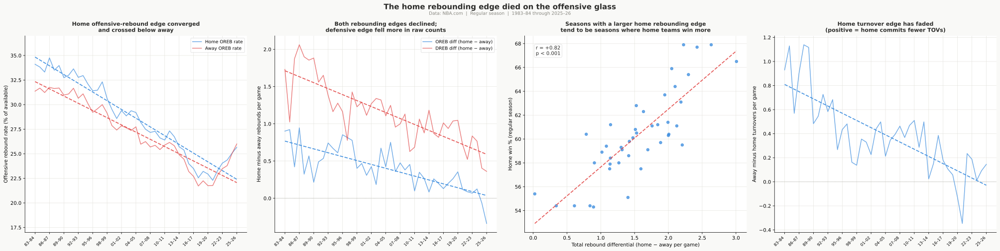
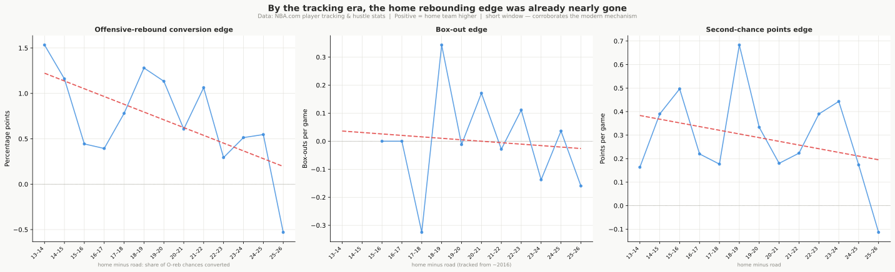

The Mystery on the Glass
Draft
Here is the most honest sentence in this whole series: I can show you exactly what happened on the glass, and I cannot tell you why. The single largest driver of the NBA’s home-court decline is rebounding, worth about 30% of it. The turnover gap closing adds nearly as much, another 27%. Together they outweigh the more famous suspects, and together they are the part of the story the data can measure but not explain.
For anyone arriving cold: home-court advantage has been shrinking for four decades, from about 65% to 55% of regular-season games and from nearly 68% to 58% in the playoffs. The three-point boom explains close to half of that, and The Three-Point Suspect makes that case. Rebounding is the largest piece the three-point boom can’t touch: in games with the same three-point volume, the rebounding advantage barely moves.
That is the part worth sitting with. Shooting was the famous suspect, and it earned its billing. Rebounding wasn’t on most lists at all, yet it carries more of the decline than any other single category, and it is the one the analysis can trace precisely without being able to say what caused it. The mix of home court itself hasn’t changed much: shooting is still the largest slice of the advantage, foul calls and turnovers fill in the rest. What flips when you ask which piece shrank is that rebounding moves to the front.
What happened: home teams stopped crashing the glass
The home team’s rebounding advantage has shrunk steadily for 40 years, on both sides of the glass. The home advantage on defensive rebounds fell from about +1.6 boards per game in the 1980s to roughly +0.6 today, a drop of about a full board. The home advantage on offensive rebounds fell from about +0.6 to slightly below zero.
Part of that defensive-rebound drop, though, is arithmetic rather than home teams rebounding worse. As shooting accuracy rose across the league over the decades, fewer shots missed, so fewer defensive rebounds were there for anyone to collect. That shrinks the home team’s raw rebound count on its own, and the cause is better shooting, which the shooting category already counts. The cleaner test is each team’s share of the offensive rebounds actually available: that share doesn’t move just because shooting improved, so it shows whether home teams are still crashing the glass harder than visitors.
On that cleaner measure, the asymmetry is clear. In the mid-1980s, home teams converted about 34% of their offensive rebounding chances; away teams converted about 31%. Both rates fell as the league moved away from crashing the glass, but the home rate dropped 8 percentage points while the away rate dropped only 5. The two lines converge and cross by 2025–26. The advantage didn’t close because away teams became better offensive rebounders. Home teams stopped crashing the offensive glass more aggressively than visitors.
Why they retreated faster than visitors is not something this data can answer. The usual explanations are strategic (teams choosing transition defense over second chances, with three-pointers scattering long rebounds to less predictable spots) or about the crowd (a home building that once spurred extra glass-crashing had nothing left to amplify once the league-wide retreat took hold). These are plausible explanations, not conclusions this analysis can establish.

The cameras see the same retreat
The player-tracking cameras in use since 2013–14 give a direct read on the same pullback, including the box-outs a box score never recorded. The home advantage in converting offensive-rebound chances kept shrinking across the tracking era, from about 1.2 to 1.3 percentage points in the mid-2010s to under 0.2 today, while home teams held no measurable box-out advantage and the second-chance-points advantage barely changed. By the time the cameras arrived, most of the 40-year decline had already happened, so this corroborates the modern mechanism rather than the long decline. The value of the cameras is that they see what the box score can’t. If home teams had simply been getting out-muscled, the box-out numbers would show it; they don’t. What faded is how hard teams chase second chances, and home teams pulled back a step faster than visitors; the tracking data watches that pullback happen without saying what is behind it.

Turnovers: the same quiet fade, half of it also a mystery
Home teams once committed about 0.4 fewer turnovers per game than visitors across the full 40-year span; that gap has nearly closed. About half of the decline is a direct consequence of the perimeter shift: three-point attempts generate fewer live-ball turnovers than drives and post play, so as both teams moved out, the absolute number of turnovers fell league-wide and the home team’s advantage shrank with it. The other half is separate from three-point volume, and what drove it is a question this data can’t settle either. Improved scouting and video preparation are the most plausible contributors: visiting teams are better prepared for unfamiliar defensive schemes than they once were. But that is a hypothesis, not a finding. Together, turnovers account for about 27% of the regular-season decline, nearly matching rebounding.
Both unexplained halves may share a single root. As the analytical tools for shot selection, scouting, and game preparation reached all 30 teams at roughly the same pace, the home team’s old preparation advantage had less room to live. When every team lands on the same approaches regardless of venue, the advantage that came from knowing your own building better has nowhere to go but down. That is a plausible explanation, not a finding, and this data can’t test it.
The playoffs point the same way
The postseason leans in the same direction on both counts. The home rebound-share advantage has fallen by roughly three-quarters there too, and the turnover trend, though small and bouncy, tilts the same way. But the playoffs run on a fifteenth as many games, so this evidence is consistent with the regular-season story rather than standing on its own. The direction is certain; the size is not.
The glass is where the decline is largest and the explanation is thinnest. That gap isn’t a hole in the analysis: it is the finding. The next article turns to the suspects that looked guilty and weren’t, the travel and rest and rule changes with airtight alibis.
Next: The Alibis
Back to the series hub: The Disappearing Home Court